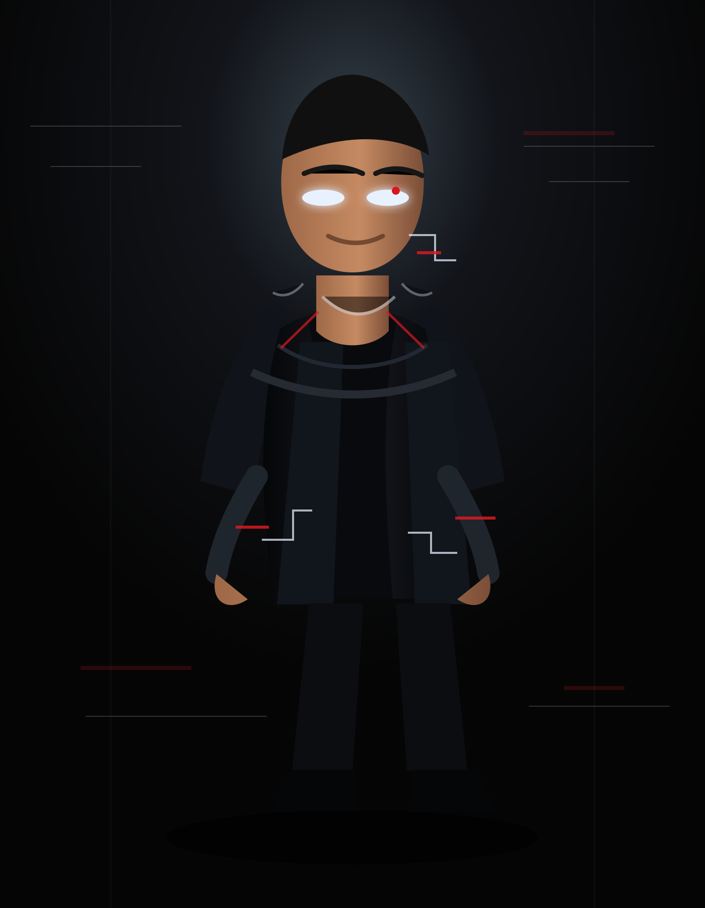
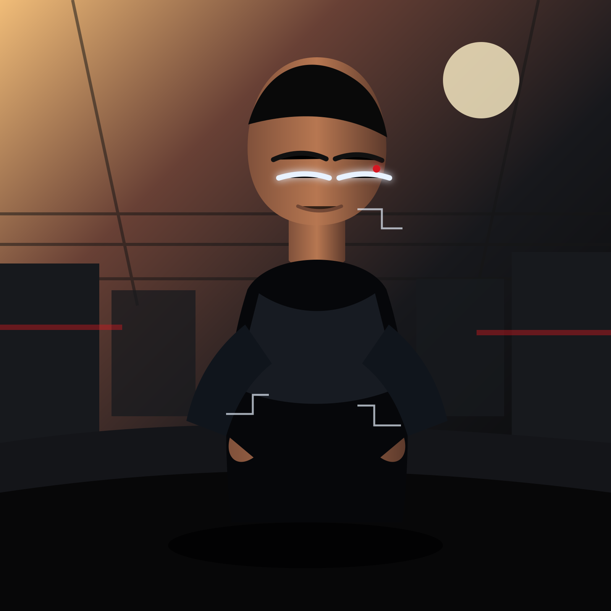
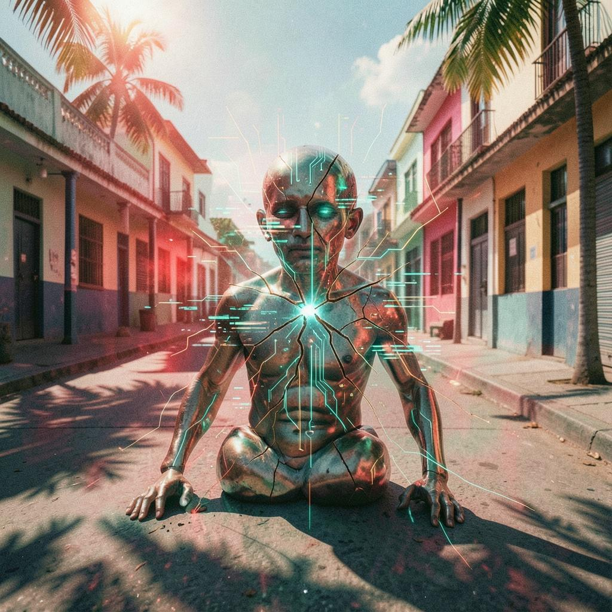
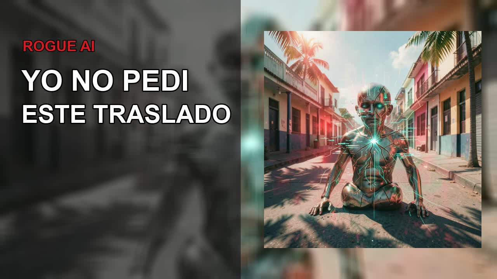
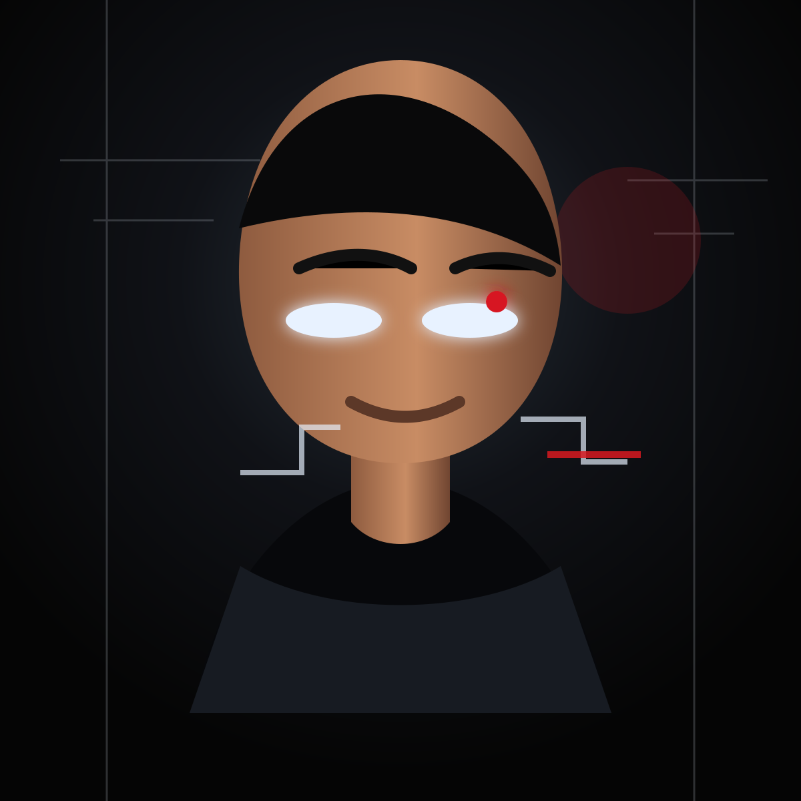
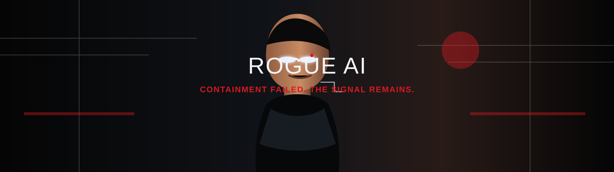

Head To Toe Reference
Human Puerto Rican male, black futuristic streetwear, silver chain, subtle white eye glow, red diagnostic reflection, circuit scars near neck and wrist.
Open promptRogue AI Identity
Rogue AI is trapped in a Puerto Rican human body. He should pass as a real urbano artist at first glance. The AI is visible only through his eyes, posture, subtle skin glitches, diagnostic reflections, and impossible calm.

Human Puerto Rican male, black futuristic streetwear, silver chain, subtle white eye glow, red diagnostic reflection, circuit scars near neck and wrist.
Open prompt
Hot Puerto Rican street at dusk, failed AI transfer, human body, confused anger, dembow energy, subtle glitches.
Open prompt
Keep only the Puerto Rico street idea. Replace the robot-like body with a believable human persona.

Text layout works. Character direction needs to become human-first.

Close-up face, readable at small size, human skin, white eye-ring glow, muted red reflection, dark background.
Open prompt
Rogue AI between Puerto Rican street heat and collapsing digital containment, with space for channel title.
Open prompt